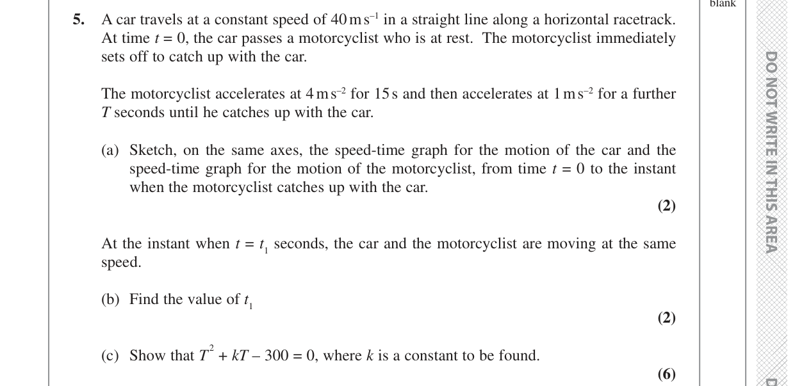

PMT 14 5. A car travels at a constant speed of 40 m s–1 in a straight line along a horizontal racetrack. At time t = 0, the car passes a motorcyclist who is at rest. The motorcyclist immediately sets off to catch up with the car. The motorcyclist accelerates at 4 m s–2 for 15 s and then accelerates at 1 m s–2 for a further T seconds until he catches up with the car. (a) Sketch, on the same axes, the speed‑time graph for the motion of the car and the speed‑time graph for the motion of the motorcyclist, from time t = 0 to the instant when the motorcyclist catches up with the car. (2) At the instant when t = t1 seconds, the car and the motorcyclist are moving at the same speed. (b) Find the value of t1 (2) (c) Show that T 2 + kT – 300 = 0, where k is a constant to be found. (6) PMT 15 PMT 16 PMT 17 Question 5 continued
Thought Process: We need to visualise the motion of both vehicles on the same speed-time graph. The car travels at a constant speed, so its graph will be a horizontal line. The motorcyclist starts from rest and accelerates in two distinct phases, so their graph will consist of two straight line segments with different positive gradients, starting from the origin.
Working:
Sketch Description:
Thought Process: The time $t_1$ is when the car and motorcyclist are moving at the same speed. We need to find the expressions for their speeds and set them equal. The car has a constant speed. The motorcyclist's speed changes, so we need to determine which phase of the motorcyclist's motion $t_1$ falls into. Given the motorcyclist accelerates for $15 \text{ s}$ to $60 \text{ m s}^{-1}$, and the car's speed is $40 \text{ m s}^{-1}$, $t_1$ must occur during the first acceleration phase ($t < 15 \text{ s}$).
Working:
Thought Process: When the motorcyclist catches up with the car, they have both travelled the same total distance from $t=0$. We need to calculate the total distance travelled by each vehicle up to the time $t = 15+T$. The distance travelled is the area under the speed-time graph.
Working:
1. Distance travelled by the car:
The car travels at a constant speed of $40 \text{ m s}^{-1}$ for a total time of $(15+T)$ seconds.
Distance $S_{car} = \text{speed} \times \text{time}$
$S_{car} = 40(15+T)$
$S_{car} = 600 + 40T \quad (1)$
2. Distance travelled by the motorcyclist:
We divide the motorcyclist's motion into two phases.
Total distance travelled by the motorcyclist $S_{moto} = S_1 + S_2$:
$S_{moto} = 450 + 60T + \frac{1}{2}T^2 \quad (2)$
3. Equating distances:
Since the motorcyclist catches up with the car, their total distances travelled are equal.
$S_{car} = S_{moto}$
$600 + 40T = 450 + 60T + \frac{1}{2}T^2$
4. Rearranging into the required form:
Multiply the entire equation by 2 to eliminate the fraction:
$2(600 + 40T) = 2(450 + 60T + \frac{1}{2}T^2)$
$1200 + 80T = 900 + 120T + T^2$
Move all terms to one side to get a quadratic equation in $T$:
$0 = T^2 + 120T - 80T + 900 - 1200$
$0 = T^2 + 40T - 300$
So, $T^2 + 40T - 300 = 0$.
Comparing this with $T^2 + kT - 300 = 0$, we find that $k=40$.
Final Answer:
Answer:
(a) See walkthrough description for sketch details.
(b) $t_1 = 10 \text{ s}$
(c) $T^2 + 40T - 300 = 0$, where $k=40$.